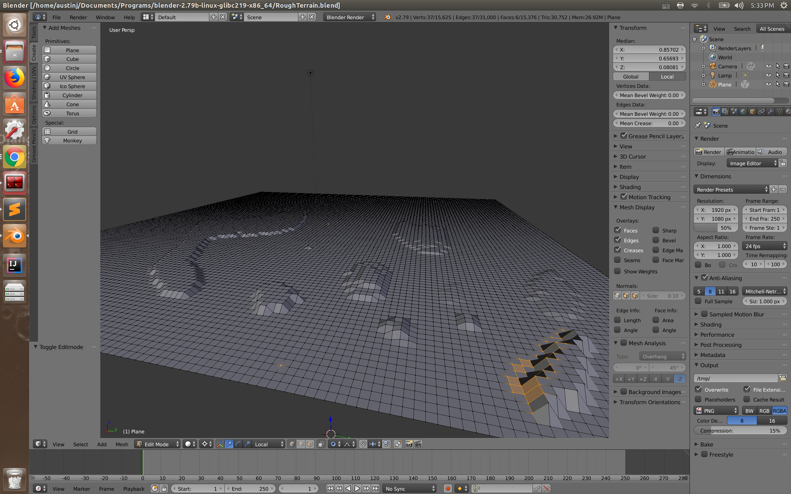

Goal:
simulation legged robot to be able to walking in the lunar enviorment.
What I did:
- Review of the state of the art in sampling based planning applied to legged robots(RRT)
- Use RRT algorithm to simulate the path-planning through Python/C++ and ROS for Turtlebot3 in gazebo environment
- Built the rosbubble robot with laserscan to navigation in the lunar environment (height-map) in V-Rep environment.
create a rough terrain using blender

tutlebot3 radar scaner in gazebo
tutlebot3 teleoperation in gazebo